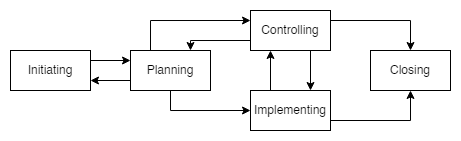
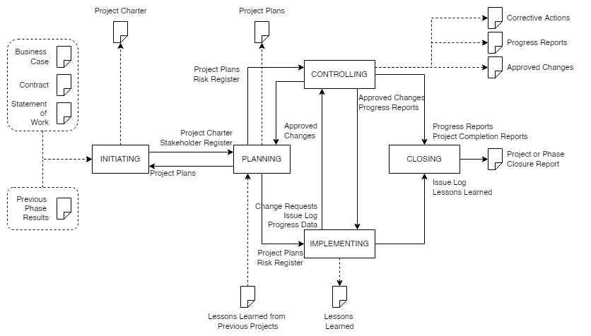

PM Processes#
PM Process Application#
The following PM processes
should be used during a project as a whole, for individual phases, or both,
are appropriate for projects in all organizations.
PM requires significant coordination and, as such, requires each process to be
appropriately aligned, and
connected with other processes.
Some processes may be repeated to
fully define and meet stakeholder requirements, and
reach an agreement on the project objectives.
In conjunction with other project stakeholders, project managers are advised to
carefully consider the processes, and
apply them as appropriate to the project and organizational needs.
The processes need not be applied uniformly on all projects or phases.
Therefore, the project manager should tailor the management processes for each project or phase by determining
what processes are appropriate, and
the degree of rigor for each process. The relevant organizational policies should accomplish this tailoring.
For a project to be successful, the following actions should be accomplished:
select appropriate processes that are required to meet the project objectives;
use a defined approach to develop or adapt the product specifications and plans to meet the project objectives and requirements;
comply with requirements to satisfy the project sponsor, customers, and other stakeholders;
define and manage the project scope within the constraints while considering the project risks and resource needs to provide the project deliverables;
obtain proper support from each performing organization, including a commitment from the customers and project sponsor.
The PM processes are defined and described in terms of their purposes, the relationships among the processes, the interactions within the processes, and the primary inputs and outputs associated with each process.
Process Groups and Subject Groups#
General#
The PM processes may be viewed from two different perspectives:
as process groups for the management of the project;
as subject groups for collecting the processes by subject.
| SUBJECT GROUPS | PROCESS GROUPS | ||||
|---|---|---|---|---|---|
| Initiating | Planning | Implementing | Controlling | Closing | |
| Integration | Develop Project Charter | Develop Project Plans | Direct Project Work | Control Project Work Control Changes | Close Project Phase or Project Collect Lessons Learned |
| Stakeholder | Identify Stakeholders | Manage Stakeholders | |||
| Scope | Define Scope Create WBS Define Activities | Control Scope | |||
| Resource | Establish Project Team | Estimate Resources Define Project Organization | Develop Project Team | Control Resources Manage Project Team | |
| Time | Sequence Activities Estimate Activity Durations Develop Schedule | Control Schedule | |||
| Cost | Estimate Costs Develop Budget | Control Costs | |||
| Risk | Identify Risks Assess Risks | Treat Risks | Control Risks | ||
| Quality | Plan Quality | Perform Quality Assurance | Perform Quality Control | ||
| Procurement | Plan Procurements | Select Suppliers | Administer Procurements | ||
| Communication | Plan Communications | Distribute Information | Manage Communications | ||
Process Groups#
General#
Each process group consists of processes that apply to any project phase or project.
These processes, further defined in terms of purpose, description, and primary inputs and outputs, are interdependent.
The process groups are independent of the application area or industry focus.
Any process may be repeated.
Initiating#
The initiating processes are used to
start a project phase or project,
define the project phase or project objectives, and
authorize the project manager to proceed with the project work.
Planning#
The planning processes are used to develop planning detail.
This detail should be sufficient to
establish baselines against which project implementation can be managed, and
performance can be measured and controlled.
Implementing#
The implementing processes are used to
perform the project management activities, and
support the provision of the project’s deliverables following the project plans.
Controlling#
The controlling processes are used to monitor, measure, and control project performance against the project plan.
Consequently, preventive and corrective actions may be taken and change requests made to achieve project objectives when necessary.
Closing#
The closing processes are used to
formally establish that the project phase or project is finished, and
provide lessons learned to be considered and implemented as necessary.
PM Process Group Interrelationships and Interactions#
The management of a project
starts with the initiating process group, and
finishes with the closing process group.
The interdependency between process groups requires the controlling process group to interact with every other process group.
 |
|---|
Figure 1 — Process groups interactions |
Process groups are
seldom discrete or one-time in their application.
repeated within each phase to drive the project to completion.
All or some processes within the process groups may be required for a project phase.
Not all interactions will apply to all project phases or projects.
In practice, the processes within the process groups are oftenconcurrent,
overlapping, and
interacting in ways not shown.
Figure 2 elaborates on Figure 1 to show the interactions among the process groups inside the project’s boundaries, including the representative inputs and outputs of processes within the process groups.
Except for the controlling process group, linkages between the various process groups are through individual processes within each process group.
While linkage is shown in Figure 2 between the controlling process group and other process groups, it may be considered self-standing because its processes control the overall project and the individual process groups.
 |
|---|
Figure 2 — Process group interactions showing representative inputs and outputs |
Subject Groups#
General#
Each subject group consists of processes applicable to any project phase or project.
These processes
are defined in terms of
purpose,
description,
primary inputs and outputs, and
are interdependent.
Subject groups are independent of the application area or industry focus.
The figures in Annex A illustrate the interactions of the individual processes in each process group identified in 4.2.2 mapped against the subject groups.
Any process may be repeated.
Integration#
The integration subject group includes
the processes required to identify, define, combine, unify, coordinate, control, and close the various activities, and
the processes related to the project.
Stakeholder#
The stakeholder subject group includes the processes required to identify and manage the project sponsor, customers, and other stakeholders.
Scope#
The scope subject group includes
the processes required to identify and define the work and deliverables, and
only the work and deliverables required.
Resource#
The resource subject group includes the processes required to identify and acquire adequate project resources such as
people,
facilities,
equipment,
materials,
infrastructure, and
tools.
Time#
The time subject group includes the processes required to
schedule the project activities, and
to monitor progress in controlling the schedule.
Cost#
The cost subject group includes the processes required to
develop the budget, and
monitor progress to control costs.
Risk#
The risk subject group includes the processes required to identify and manage threats and opportunities.
Quality#
The quality subject group includes the processes required to plan and establish quality assurance and control.
Procurement#
The procurement subject group includes the processes required to
plan and acquire products, services or results, and
manage supplier relationships.
Communication#
The communication subject group includes the processes required to plan, manage and distribute information relevant to the project.